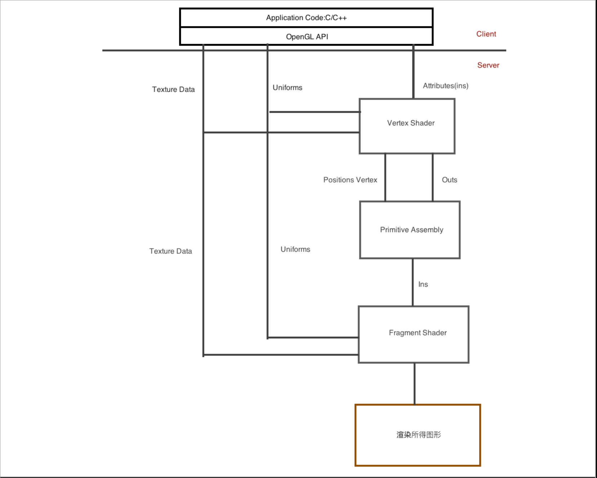
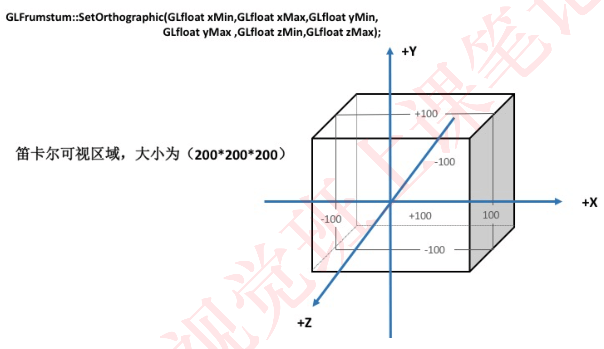
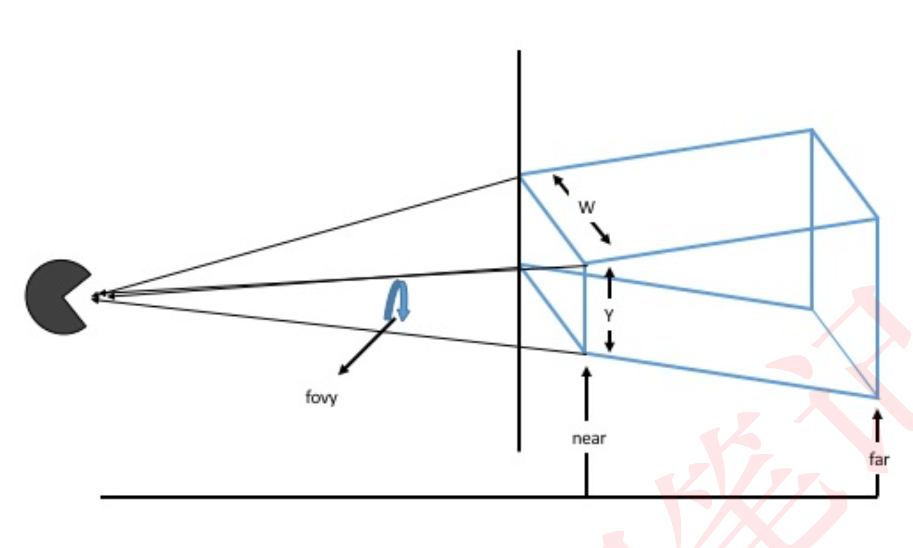
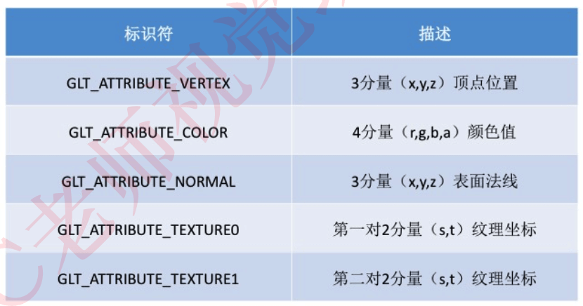

1. 1.OpenGL渲染结构与常用图元
1.1. 学习内容
- 掌握OpenGL渲染基础架构
- 如何使用7种OpenGL几何图元
- 如何使⽤存储着⾊器
- 如何使用Uniform属性
- 如何使用GLBatch帮助类创建⼏何图形
1.2. 一、OpenGL 与 着色器
在OpenGL 3.0之前，OpenGL 包含一个固定功能的管线，它可以在不使用 着⾊器的情况下处理理⼏何与像素数据。在3.1版本开始，固定管线从核心 模式去掉。因此现在需要使用着色器来完成⼯作。 使⽤用OpenGL 来说，我们会使用GLSL,(OpenGL Shading Langruage，它是 在OpenGL 2.0版本发布的)。 语法与“C、C++”类似。
1.3. 二、基础图形管线
OpenGL 中的图元只不过是顶点的集合以预定义的方式结合一起罢了。
例如:⼀个单独的点就是⼀个图元。它只需要⼀个顶点
1.3.1. 2.1 OpenGL 渲染管线简化版本

客户机、服务器
- 管线分为上下2部分，上部分是客户端，而下半部分则是服务端。
- 客户端是存储在CPU存储器中的，并且在应用程序中执行，或者在主系 统内存的驱动程序中执⾏。驱动程序会将渲染命令和数组组合起来，发送给服务器器执⾏!(在⼀台典型的个人计算机上，服务器就是实际上就 是图形加速卡上的硬件和内存)
- 服务器 和 客户机在功能上也是异步的。 它们是各⾃独立的软件块或硬件块。我们是希望它们2个端都尽量在不停的工作。客户端不断的把数据块和命令块组合在一起输送到缓冲区，然后缓冲区就会发送到服务器 执行。
- 如果服务器停止⼯作等待客户机，或者客户机停止工作来等待服务器做 好接受更多的命令和准备，我们把这种情况成为管线停滞。
着色器
上图的Vertex Shader(顶点着⾊器) 和 Fragment Shader(⽚段着色器)。
- 着⾊器是使⽤用GLSL编写的程序，看起来与C语⾔非常类似。 着⾊器必 须从源代码中编译和链接在一起。最终准备就绪的着⾊器程序
- 顶点着⾊器-->处理从客户机输⼊的数据、应⽤变换、进行其他的类型 的数学运算来计算关照效果、位移、颜色值等。(**为了渲染共有3个顶点的三⻆形，顶点着⾊器将执行3次，也就是为了每个顶点执行⼀次)在⽬前的硬件上有多个执行单元同时运行，就意味着所有的3个顶点可以同时进⾏处理!
- 图上(primitive Assembly 说明的是:3个顶点已经组合在一起，⽽三⻆ 形已经逐个片段的进⾏了光栅化。每个⽚段通过执⾏⽚元着⾊器进行 填充。⽚元着⾊器会输出我们将屏幕上看到的最终颜色值。
重点! 我们必须在这之前为着⾊色器器提供数据，否则什什么都⽆无法实现! 有3种向OpenGL 着⾊色器器传递渲染数据的⽅方法可供我们选择 1.属性 2.uniform 值 3.纹理理
1.4. 三、属性、uniform值、纹理理、输出
1.4.1. 3.1 属性
属性:就是对每⼀个顶点都要作改变的数据元素。实际上，顶点位置本身 就是⼀个属性。属性值可以是浮点数、整数、布尔数据。
- 属性总是以四维向量量的形式进行内部存储的，即使我们不会使用所有的 4个分量量。⼀个顶点位置可能存储(x,y,z)，将占有4个分量中的3个。
- 实际上如果是在平⾯情况下:只要在xy平⾯上就能绘制，那么Z分量就 会自动设置为0;
- 属性还可以是:纹理坐标、颜⾊值、光照计算表⾯法线
- 在顶点程序(shader渲染)可以代表你想要的任何意义。因为都是你设 定的。
- 属性会从本地客户机内存中复制存储在图形硬件中的⼀个缓冲区上。这些属性只提供给顶点着⾊器使用，对于⽚元着色器⽊有太大意义。
- 声明:这些属性对每个顶点都要做改变，但并不意味着它们的值不能重复。通常情况下，它们都是不一样的，但有可能整个数组都是同一值的 情况。
1.4.2. 3.2 Uniform值
属性是⼀种对整个批次属性都取统一值的单⼀值。它是不变的。通过设置uniform变量就紧接着发送一个图元批次命令，Uniform变量实际上可以无数次限制地使⽤用，设置一个应用于整个表⾯的单个颜色值，还可以设置⼀ 个时间值。在每次渲染某种类型的顶点动画时修改它。
- 注意:这⾥的uniform变量每个批次改变一次，⽽不是每个顶点改变一次。
- uniform变量最常见的应⽤是在顶点渲染中设置变换矩阵 后⾯的课程会详细讲解
- 与属性相同点:可以是浮点值、整数、布尔值
- 与属性不同点:顶点着⾊器和片元着色器都可以使用uniform变量。uniform 变量还可以是标量类型、⽮量类型、uniform矩阵。
1.4.3. 3.3 纹理
传递给着⾊器的第三种数据类型:纹理数据 现在就教大家如果处理纹理数据并将其传递给着⾊器的细节还为时过早。 我们先在前⾯的课程中，了解什么叫做纹理!
- 在顶点着⾊器、⽚段着⾊器中都可以对纹理数据进⾏采样和筛选。
- 典型的应⽤场景:⽚段着⾊器对⼀个纹理值进行采样，然后在⼀个三⻆形表⾯应⽤渲染纹理数据。
- 纹理数据，不仅仅表现在图形，很多图形⽂件格式都是以无符号字节(每个颜⾊通道8位)形式对颜⾊分量进⾏存储的。
1.4.4. 3.4 输出
在图表中第四种数据类型是输出(out);输出数据是作为⼀个阶段着⾊ 器的输出定义的，⼆后续阶段的着⾊器则作为输⼊定义。
- 输出数据可以简单的从⼀个阶段传递到下⼀个阶段，也可以⽤不同的⽅式插⼊。
- 客户端的代码接触不到这些内部变量 我们的OpenGL开发暂时接触不到。
1.5. 四、创建坐标系
1.5.1. 4.1 正投影

这就是⼀个正投影的例子，在所在3个轴(X,Y,Z)中，它们的范围都是 从-100到+100。这个视景体将包括所有的⼏何图形。 如果你指定了视景体外的⼏何图形，就会被裁减掉!(它将沿着视景体的边界进行剪切) 在正投影中，所有在这个空间范围内的所有东⻄都将被呈现在屏幕上。⽽ 不存在照相机或视点坐标系的概念。
1.5.2. 4.2 透视投影

透视投影会进行透视除法对距离观察者很远的对象进⾏缩短和收缩。在投 影到屏幕之后，视景体背⾯与视景体正⾯的宽度测量标准不同。
上图所示:平截头体(frustum)的⼏何体，它的观察⽅向是从⾦字塔的 尖端到宽阔端。观察者的视点与⾦字塔的尖端拉开⼀定距离。
GLFrustum类通过setPerspective⽅法为我们构建⼀个平截头体。
CLFrustum::SetPerspective(float fFov,float fAspect,float fNear ,float fFar);
参数:
fFov:垂直⽅向上的视场⻆度
fAspect:窗⼝的宽度与⾼度的纵横⽐
fNear:近裁剪⾯距离
fFar:远裁剪⾯距离
纵横⽐比 = 宽(w)/⾼(h)
1.6. 五、使⽤存储着⾊器
1.6.1. 5.1 使⽤背景
在OpenGL核⼼框架中，并没有提供任何内建渲染管线，在提交一个⼏何图形进行渲染之前，必须实现⼀个着⾊器。 在前⾯的课程可以使用存储着⾊器。这些存储着⾊器由GLTools的C++类 GLShaderManager管理。它们能够满⾜进行基本渲染的基本要求。要求不高的程序员，这些存储着⾊器已经⾜以满足他们的需求。但是，随着时间和经验的提升，⼤部分开发者可能不满⾜于此。 会开始⾃自己着⼿去写着⾊器。
1.6.2. 5.2 存储着⾊器的使⽤
GLShaderManager 的初始化
// GLShaderManager 的初始化
GLShaderManager shaderManager;
shaderManager.InitializeStockShaders()
GLShaderManager 属性

存储着⾊器为每⼀个变量都使用一致的内部变量命名规则和相同的属性 槽。以上就是存储着色器的属性列列表
GLShanderManager 的 uniform值
- ⼀般情况，要对⼏何图形进行渲染，我们需要给对象递属性矩阵，⾸ 先要绑定我们想要使⽤的着⾊程序上，并提供程序的uniform值。但是GLShanderManager 类可以暂时为我们完成工作。
userStockShader函数会选择⼀个存储着⾊器并提供这个着⾊器的 uniform值。
GLShaderManager::UserStockShader(GLeunm shader...);
单位(Identity 着⾊器)
GLShaderManager::UserStockShader(GLT_ATTRIBUTE_VERTEX,GLfloat vColor[4]);
单位着⾊器:只是简单地使⽤默认笛卡尔坐标系(坐标范围(-1.0， 1.0))。所有的⽚段都应⽤同一种颜色，几何图形为实⼼和未渲染的。 需要设置存储着色器⼀个属性: GLT_ATTRIBUTE_VERTEX(顶点分量) 参数2:vColor[4],你需要的颜色。
平⾯着⾊器
GLShaderManager::UserStockShader(GLT_SHADER_FLAT,GLfloat mvp[1 6],GLfloat vColor[4]);
参数1:平⾯着⾊器
参数2:允许变化的4*4矩阵
参数3:颜⾊
它将统⼀着⾊器器进行了拓展。允许为⼏何图形变换指定一个 4 * 4 变换矩 阵。经常被称为“模型视图投影矩阵”
上⾊着⾊器
GLShaderManager::UserStockShader(GLT_SHADER_SHADED,GLfloat mvp [16]);
在⼏几何图形中应⽤用的变换矩阵。
需要设置存储着色器的 GLT_ATTRIBUTE_VERTEX(顶点分量) 和
GLT_ATTRIBUTE_COLOR(颜⾊色分量量) 2个属性。颜⾊值将被平滑地插⼊顶点之间(平滑着色)
默认光源着⾊器
GLShaderManager::UserStockShader(GLT_SHADER_DEFAULT_LIGHT,GLfloat mvMatrix[16],GLfloat pMatrix[16],GLfloat vColor[4]);
参数1:默认光源着色器
参数2:模型视图矩阵
参数3:投影矩阵
参数4:颜色值
这种着⾊器，是对象产⽣阴影和光照的效果。需要设置存储着⾊器的 GLT_ATTRIBUTE_VERTEX(顶点分量) 和
GLT_ATTRIBUTE_NORMAL(表⾯面法线)
点光源着⾊色器器
GLShaderManager::UserStockShader(GLT_SHADER_DEFAULT_LIGHT_DIEF ,GLfloat mvMatrix[16],GLfloat pMatrix[16],GLfloat vLightPos[3] ,GLfloat vColor[4]);
参数1:点光源着⾊器
参数2:模型视图矩阵
参数3:投影矩阵
参数4:视点坐标光源位置
参数5:颜⾊值
点光源着⾊器和默认光源着色器很相似，区别在于:光源位置是特定的。 同样需要设置存储着色器的 GLT_ATTRIBUTE_VERTEX(顶点分量) 和
GLT_ATTRIBUTE_NORMAL(表⾯法线)
纹理替换矩阵
GLShaderManager::UserStockShader(GLT_SHADER_TEXTURE_REPLACE,GL float mvMatrix[16],GLint nTextureUnit);
着⾊器通过给定的模型视图投影矩阵，使⽤绑定到 nTextureUnit (纹理单元) 指定纹理单元的纹理对几何图形进行变化。 ⽚段颜色:是直接从纹理样本中直接获取的。
需要设置存储着⾊器的 GLT_ATTRIBUTE_VERTEX(顶点分量) 和 GLT_ATTRIBUTE_NORMAL(表⾯法线)
纹理调整着⾊器
GLShaderManager::UserStockShader(GLT_SHADER_TEXTURE_MODULATE,GLfloat mvMatrix[16],GLfloat vColor[4],GLint nTextureUnit);
将⼀个基本⾊乘以一个取⾃纹理单元 nTextureUnit 的纹理。 需要设置存储着色器的 GLT_ATTRIBUTE_VERTEX(顶点分量) 和
GLT_ATTRIBUTE_TEXTURE0(纹理坐标)
纹理光源着⾊器
GLShaderManager::UserStockShader(GLT_SHADER_TEXTURE_POINT_LIGH T_DIEF,GLfloat mvMatrix[16],GLfloat pMatrix[16],GLfloat vLight Pos[3],GLfloat vBaseColor[4],GLint nTextureUnit);
参数1:纹理光源着⾊器 参数2:投影矩阵 参数3:视觉空间中的光源位置 参数4:⼏何图形的基本⾊ 参数5:将要使用的纹理单元
将⼀个纹理通过漫反射照明计算机进行调整(相乘)。光线在视觉空间中的位置是给定的。
需要设置存储着⾊器的 GLT_ATTRIBUTE_VERTEX(顶点分量) 和
GLT_ATTRIBUTE_TEXTURE0(纹理坐标)、GLT_ATTRIBUTE_NORMAL(表⾯法线)